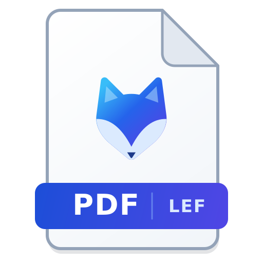

Edición directa sobre el papel
Cambia palabras, fechas o importes directamente en el documento. PDF-LEF detecta el color exacto del fondo y limita el ancho al margen de la hoja para que nada se desborde.
PDF-LEF combina la elegancia de escritorio de Thunderbird con la precisión
de un estudio PDF profesional: edita y mueve textos reales sin que se desemparejen, sube
imágenes limpias sin bordes, firma contratos y dale a todos tus archivos .pdf
una identidad impecable.
Olvídate de convertir archivos a otros formatos o sufrir renglones chuecos. Haz clic sobre cualquier texto existente para corregirlo en su lugar con precisión milimétrica.
Cambia palabras, fechas o importes directamente en el documento. PDF-LEF detecta el color exacto del fondo y limita el ancho al margen de la hoja para que nada se desborde.
Al arrastrar un texto, guías magnéticas automáticas lo alinean con el resto de filas y columnas. Además puedes ajustarlo punto por punto con las flechas del teclado.
Sube o pega imágenes con Ctrl+V totalmente limpias —sin etiquetas ni marcos—
y elimina el fondo blanco de logotipos o firmas en un solo clic.
Al instalar PDF-LEF y elegirla como aplicación predeterminada, todos los archivos
.pdf de tu Escritorio y Explorador de Windows lucen un icono minimalista,
nítido y fácil de distinguir al instante, abriéndose en menos de medio segundo con doble clic.
PDFLEF.Document integrada en el instalador de Windows.
Contrato_Servicios.pdf Documento PDF-LEF · 420 KBUna barra de herramientas clara, amigable y sin menús escondidos: abre cualquier PDF y resuélvelo en segundos.
Dibuja tu firma o sube una foto en papel; el fondo blanco desaparece automáticamente.
Resaltador, notas, formas, censura permanente y sellos ejecutivos listos para usar.
Combina múltiples PDFs, extrae páginas específicas o reordénalas visualmente.
Convierte imágenes en un documento PDF limpio o extrae tablas directamente a Excel.
| Característica | PDF-LEF | Suites PDF tradicionales | Editores web online |
|---|---|---|---|
| Peso de instalación y velocidad al abrir un PDF | ~9 MB · Instantáneo (< 0.4 s) | Más de 1 GB · Inicio lento | Requiere subir el archivo |
| Editar y mover textos con guías magnéticas | Incluido sin costo mensual | Solo con suscripción de pago | Desalinea fuentes y márgenes |
| Subir imágenes, logos y firmas sin fondo blanco | 1 clic · 100% limpio | Complejo | Marca de agua en plan gratuito |
| Privacidad de tus documentos | 100% Local en tu PC | Nube activa por defecto | Tus archivos viajan a servidores externos |